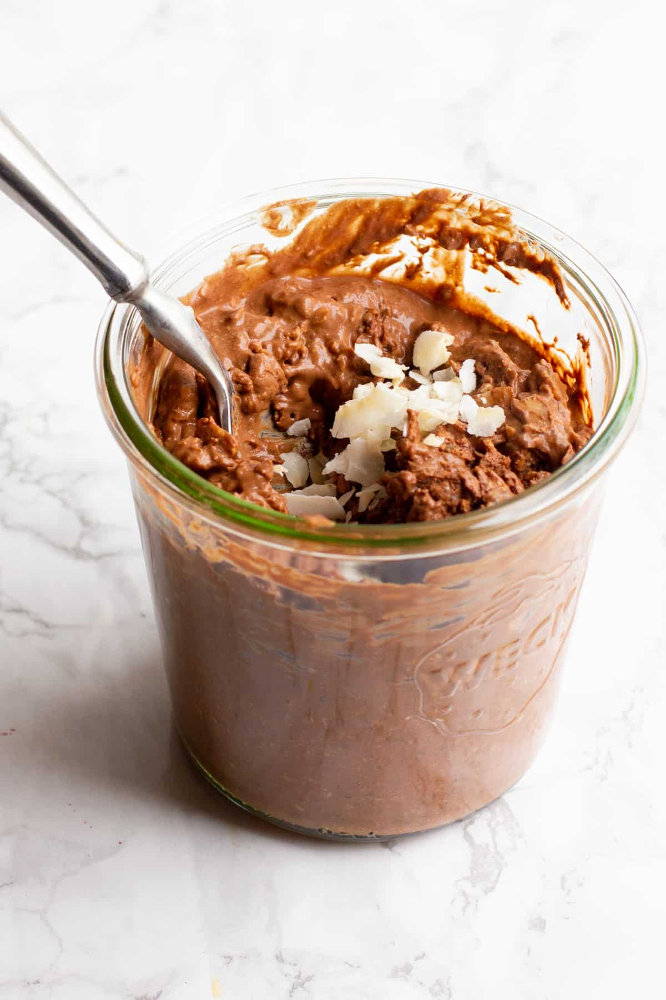

Chocolate Coconut Overnight Oats

Description
Easy recipe for chocolate coconut overnight oats. You can make this
the night before for a quick and easy breakfast
Ingredients
- 1 tablespoon chia seeds
- 1 tablespoon packed shredded sweetened coconut
- 1 tablespoon maple syrup
- 1 tablespoon unsweetened cocoa powder
- 1 splash vanilla extract
Directions
- Mix almond milk, oats, chia seeds, coconut,
maple syrup, cocoa powder, and vanilla extract in a 12-ounce mason jar.
Cover and refrigerate, 8 hours to overnight. Stir and serve cold.